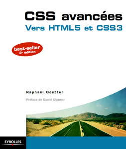

CSS avancées vers HTML5 et CSS3
par Raphaël Goetter, préface de Daniel Glazman
L'erreur est humaine… mais correctible ! Contactez-moi ( ) pour me signaler toute coquille dénichée au sein de l'ouvrage.
Les errata mentionnés ci-dessous sont encore présents au sein de la deuxième édition de l'ouvrage, publiée en 2012.
Dans le code HTML, le commentaire /* plus de whitespace entre les éléments */ doit être corrigée par <!-- plus de whitespace entre les éléments --!>
Le site www.ie7nomore.com n'existe plus, et l'ensemble des liens
le concernant ne sont plus accessibles, plus particulièrement
ceux concernant des exemples de l'utilisation de la
pseudo-classe :target :
- www.ie7nomore.com/fun/slideshow/
- www.ie7nomore.com/fun/scroll/
- www.ie7nomore.com/fun/menu/
La majorité de ces ressources peuvent être trouvées sur mon nouveau bac à sable : http://lab.goetter.fr
Notez que la majorité des errata mentionnés ci-dessous proviennent d'une erreur de manipulation de l'imprimeur (concaténation d'espaces) et sont d'ores et déjà corrigés dans la deuxième édition ainsi que dans la version numérique (ebook) de l'ouvrage.
La partie "une introduction aux positionnement" doit être corrigée par "une introduction aux positionnements"
La partie "forum de discussion" doit être corrigée par "forum de discussions"
L'adresse du lien vhttp://lesscss.org doit
être remplacée par http://lesscss.org
La partie "mais il le sont également" doit être corrigée par "mais ils le sont également"
Le texte deux éléments en flux doit être remplacé par trois éléments en flux
Le commentaire /* à 20% du coin supérieur droit du référent */ doit être corrigée par /* à 10% au-dessous et à gauche du coin supérieur droit du référent */
La partie "comme que nous le faisons actuellement" doit être corrigée par "comme nous le faisons actuellement"
Le texte du contenu qui a déborderait doit être remplacé par du contenu qui déborderait
Partie corrigée :
<!--[if lte IE 7]>
<link rel="stylesheet" type="text/css" href="styles-ie7.css" />
<![endif]-->Explication : il faut absolument laisser un espace dans la syntaxe "IE 7" sinon c'est mal interprété sous certaines versions d'Internet Explorer (IE8 notamment)
Partie corrigée :
<!--[if IE 6]> pour IE6 uniquement <![endif]-->
<!--[if gt IE 6]> pour les versions supérieures à IE6 <![endif]-->
<!--[if gte IE 6]> pour les versions supérieures ou égales à IE6 <![endif]-->
<!--[if lt IE 8]> pour les versions inférieures à IE8 <![endif]-->
<!--[if lte IE 8]> pour les versions inférieures ou égales à IE8 <![endif]-->
Il est par ailleurs possible d’incorporer des opérateurs logiques tels que & (et) ou encore | (ou).
<!--[if (gte IE 6)&(lte IE 8)]> entre les versions IE6 et IE8 uniquement <![endif]
-->
<!--[if (IE 6)|(IE 8)]> pour les versions IE6 ou IE8 uniquement <![endif]-->Explication : là aussi, il faut absolument laisser un espace dans les syntaxes "IE 6", "IE 7" et "IE 8" sinon c'est mal interprété sous certaines versions d'Internet Explorer (IE8 notamment)
Parties corrigées :
<!--[if lte IE 6]>
...
<!--[if lt IE 8]>
<link rel="stylesheet" href="styles_ie.css" type="text/css" />
<![endif]-->
...
<!--[if lte IE 7]> <body class="ie7"> <![endif]-->Explication : là encore, il faut absolument laisser un espace dans les syntaxes "IE 6", "IE 7" et "IE 8" sinon c'est mal interprété sous certaines versions d'Internet Explorer (IE8 notamment)
Partie corrigée :
<!--[if gt IE 7]> <body> <![endif]-->
<!--[if lte IE 7]> <body class="ie7"> <![endif]-->
<!--[if !IE]><!--> <body> <!--<![endif]-->Explication : il faut tenir compte de toutes les versions d'IE sous peine de ne pas afficher la balise <body> si la première ligne de code n'apparaît pas.
Partie corrigée :
<!--[if lt IE 9]>
<script src="scripts/html5-ie.js"></script>
<![endif]-->
Et un peu plus loin :
<!--[if lt IE 9]>
<script src="http://html5shiv.googlecode.com/svn/trunk/html5.js"></script>
<![endif]-->Explication : comme précédemment, il faut absolument laisser un espace dans les syntaxes "IE 9" sinon c'est mal interprété sous certaines versions d'Internet Explorer (IE8 notamment)
Partie corrigée :
<!--[if lt IE 9]><script src="excanvas.js"></script><![endif]-->Explication : il manque l'espace indispensable dans "IE 9"
Le tableau indique que la propriété
text-overflow est reconnue par Firefox 4, ce qui
n'est pas le cas.
Parties corrigées (deux occurences) :
<!--[if lte IE 9]>Explication : il manque l'espace indispensable dans "IE 9"
La balise fermant <label> est bien
</label> et non </span>
La partie "couleur de fond #999" doit être corrigée par "couleur de fond #777" pour être conforme au code CSS.
Il y a une erreur dans le tableau récapitulatif : RGBa et HSLa sont compatibles depuis Firefox 3.5 et non Firefox 4.
Partie erronée :
}/*mediaquery*/Partie corrigée :
}/*/mediaquery*/ Explication : La syntaxe de respond.js a changé
Partie corrigée :
<!--[if lte IE 8]> <script type="text/javascript" src="respond.min.js"></script>
<![endif]-->Explication : il manque l'espace indispensable dans "IE 9"
"au sein du système de navigation" doit être corrigée par "au sein du système d'exploitation"
{kind=link}